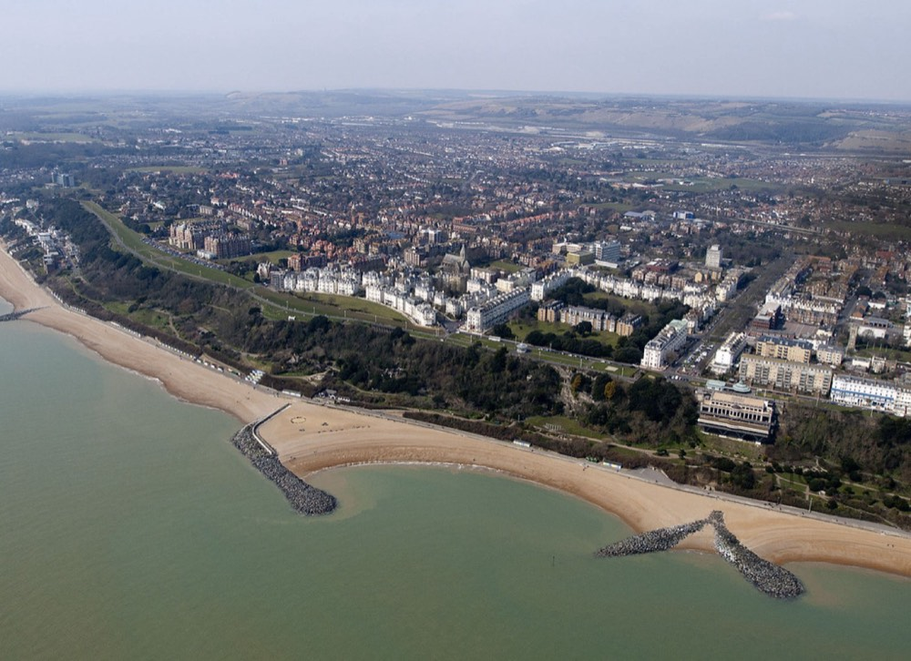
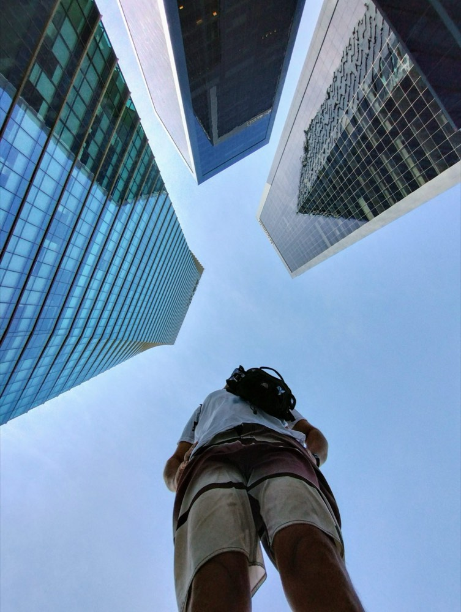

Einstellungsgrössen, Perspektiven & mehr
Vier Werkzeuge entscheiden, wie eine Aufnahme wirkt: wie nah die Kamera ans Motiv geht (Einstellungsgrösse), aus welchem Winkel sie draufschaut (Perspektive), wie das Bild aufgebaut ist (Komposition) und ob und wie sich die Kamera bewegt. Alle vier lernst du hier – im Lager wendest du sie direkt an.
Von der Totalen bis ins Detail
Dieselbe Person, derselbe Ort – nur die Kamera zoomt immer weiter rein.
Merksatz
Beim Schneiden nie mehr als eine Einstellungsgrösse „überspringen” – sonst wirkt der Schnitt wie ein Fehler (Jump Cut). Von Totale direkt auf Detail springen vermeiden, lieber eine Zwischenstufe zeigen.
Der Blickwinkel der Kamera
Einstellungsgrösse und Perspektive sind unabhängig voneinander – beides lässt sich beliebig kombinieren.
Merksatz
„Von unten = Held.” Froschperspektive lässt ein Motiv mächtig und dominant wirken – Vogelperspektive macht es klein und überblickbar.
So sieht das in echten Fotos aus


Wie das Bild aufgebaut ist
Die Drittelregel kennst du schon aus Modul 1 – sie ist aber nur eine von mehreren Kompositionsregeln, die dein Bild sofort professioneller wirken lassen.
Führungslinien (Leading Lines)
Wege, Geländer, Bahnschienen oder Lichtstreifen lenken das Auge automatisch zu deinem Hauptmotiv, wenn du sie diagonal ins Bild einbaust statt sie einfach zu ignorieren.
Blickrichtungsraum (Nasenraum)
Schaut eine Person im Bild nach links, lass mehr Freiraum auf der linken Seite als auf der rechten – sonst wirkt es, als würde sie „gegen den Bildrand schauen”.
Symmetrie & Balance
Manchmal ist genau die Mitte richtig: Bei symmetrischen Motiven (Gänge, Spiegelungen, Architektur) wirkt eine zentrierte Komposition bewusst ruhig und kraftvoll – das Gegenteil der Drittelregel, genauso absichtlich eingesetzt.
Bewegt sich die Kamera – und wie?
- Schwenk (Pan): Die Kamera dreht sich von einem festen Punkt aus horizontal oder vertikal – gut, um einen Raum oder eine Landschaft zu „erlaufen”, ohne selbst zu gehen.
- Fahrt/Tracking: Die Kamera selbst bewegt sich durch den Raum (z. B. beim Gehen mitgefilmt) – wirkt dynamischer als ein Schwenk, braucht aber ruhige Schritte.
- Zoom vs. Fahrt: Ein Zoom vergrössert nur den Bildausschnitt, die Perspektive bleibt gleich. Eine Fahrt (näher hingehen) verändert echte Tiefe und Perspektive – wirkt darum natürlicher.
- Handheld vs. stabilisiert: Freihändig gefilmt wirkt unmittelbar und dokumentarisch (bewusst als Stilmittel einsetzbar), abgestützt/mit Gimbal wirkt ruhig und „professionell”. Beides ist richtig – die Frage ist, was zur Szene passt.
Kurz angewendet
Kein Test, nur zum Einprägen.